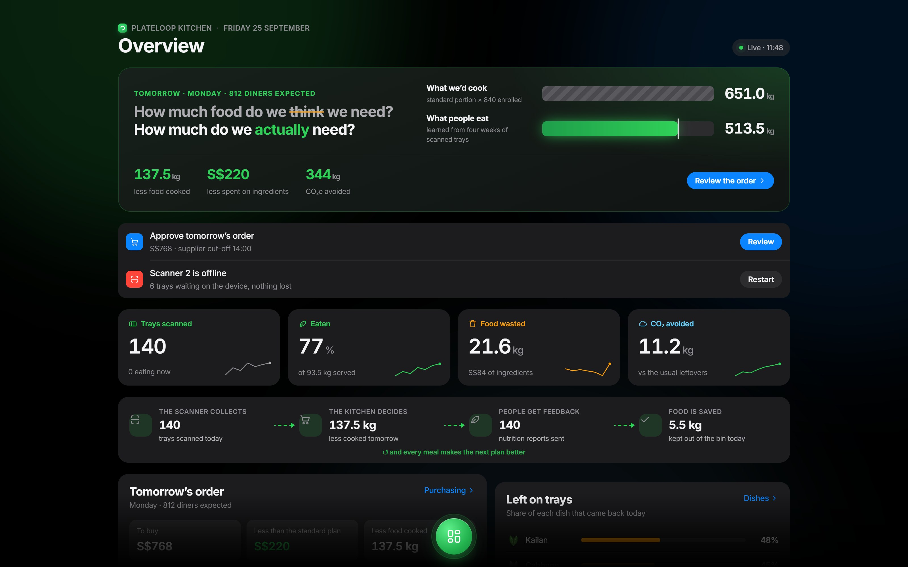
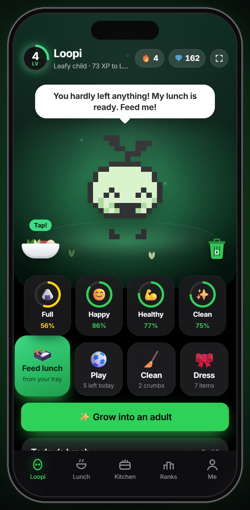
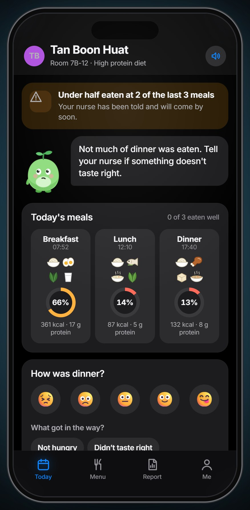
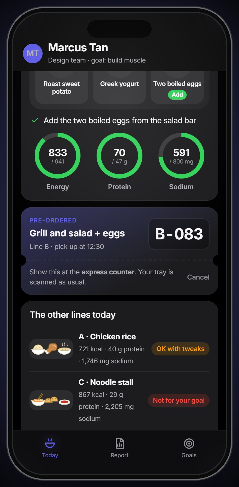

See it in action.
Canteens cook by guesswork.
Bins get weighed, but a bin can’t tell you which dish came back or who didn’t eat. Without that, kitchens over-order, plates come back full, and the cycle repeats.
of food was thrown away in Singapore in 2023. Only about 18% was recycled.
of the world’s food waste comes from food service: canteens, restaurants and caterers.
of global greenhouse gas emissions come from food that is lost or wasted.
Sources: NEA waste statistics 2023; UNEP Food Waste Index Report 2024.
One scanner. Two scans.
Look at the camera and put your tray down before you eat, then again after. The difference is exactly what you ate, dish by dish, in about two seconds. Nobody types anything or carries a card.
- ServeAsk for more or less of each dish.
- Scan beforeLook at the camera, tray down.
- EatNothing to do. Take what you’ll finish.
- Scan afterSame scanner sees what’s left.
- ScrapeThe food waste bin weighs scraps too.
- DoneEvery app updates in seconds.
Sensors
On the scanner
PlateLoop cloud
Apps
Built for everyone at the table.
Each app comes from research on the people who use it. Tap any one to open the live demo.

PlateLoop Kitchen
Tomorrow’s order from real attendance, weather and events. What comes back, dish by dish. Nutrition against My Healthy Plate, and a carbon ledger ready for reporting.
Open the dashboard →
Loopi
A virtual pet that only eats the lunch you really ate. Less waste keeps it healthy and levels it up. Food groups, not calories, plus challenges and a class race.
Open Loopi →
Loopi Care
Every meal measured, no food charts. Patients choose tomorrow’s meals, and after a poor meal the nurse sees the alert with their reason.
Open Loopi Care →
Loopi Work
A health goal becomes a daily canteen pick. Pre-order to skip the queue, and a 3 pm check-in shows which lunches leave you flat. Private by default.
Open Loopi Work →What each group actually needs.
We read the studies on students, patients and office workers, then turned each finding into a feature. Read the research and sources →
of university students in Singapore eat enough fruit and vegetables, and calorie counting can harm teens.
- Food groups, not calories
- Class race: −35% plate waste in studies
- Right portion beats a clean plate
of inpatients in a Singapore hospital were malnourished, and 93% of hand-filled food charts were incomplete.
- Every tray measured
- Patients choose their meals
- Alerts with the patient’s reason
Singapore residents eat out for lunch or dinner, and carb-heavy lunches deepen the afternoon dip.
- Pre-order: +51% fruit in a trial
- 3 pm energy check-in
- Private: teams, never names
Every step has a way out.
A queue of hungry students can’t wait for a stuck machine. We walked through every step, found where it breaks, and fixed it. You can try each one in the kiosk demo.
“We couldn’t find you.” Try again, or type a class and register number.
Students can switch it off in the app; the scanner goes straight to the keypad.
The scale waits for hands off, then measures again by itself.
A regular portion is used as the estimate and marked “estimated”.
Students are compared with their own usual; a small plate finished scores full marks.
Consent on day one. Only grams per dish and a tray number leave the scanner.
It pays for itself.
Illustrative: 190 school days, 25% of food wasted today, PlateLoop cuts 30% of it, S$2.50 of ingredients per meal, 2.5 kg CO₂e per kg of food. To be validated in a pilot. Try your own numbers on the deck’s calculator.
The scanner and Kitchen dashboard, billed monthly, so there’s no big upfront cost.
Loopi, Loopi Care, Loopi Work and carbon management as add-ons.
Food service companies bring many canteens at once.
A whole lunch, in four clicks.
- Open the kiosk, pick Wei Ling and scan her tray before lunch, then after.
- Open Loopi in another tab: her lunch is in Loopi’s bowl. Feed it, then sweep up what she left.
- Open Kitchen: the tray is in the live numbers, and Purchasing plans tomorrow.
- In Loopi Care or Loopi Work, scan a meal from the demo panel and watch the report change.